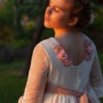

Sesiones
Familia y retrato
Sesiones para familias y retratos personales en un ambiente cercano.
Bebés y embarazo
Fotografías para recordar etapas especiales y primeros momentos.
Comuniones y celebraciones
Consulta la disponibilidad para comuniones y otros eventos.


Para consultar una sesión, indícanos el tipo de reportaje, las fechas que te interesan y el número de personas.